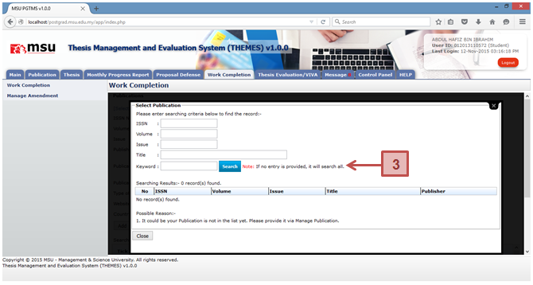

Prerequisite
The publication has been added by the student via Manage Publication.
Steps
- Click on Publication button to add the publication.
- The system will open the Publication page. Select Select From Manage Publication to open another page to list the already added publication.
- Enter the searching criteria or just click the button to get the search result.
- Click on the ISSN number on the ISSN Search column to populate the record into the Publication detail page.
- Click Add button to add the publication detail into the Publication List
Next Action
- Add another Publication
- Delete Publication
Warning
System will prompt a notification message if no publication has been selected before the addition.
Note
None
Created with the Personal Edition of HelpNDoc: Create iPhone web-based documentation